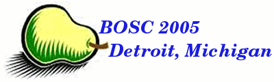

The conference
The 6th annual Bioinformatics Open Source Conference (BOSC'2005)
is organized by the not-for-profit Open Bioinformatics Foundation. The meeting will take place
June 23-24, 2005 in Detroit, Michigan, USA, and is one of several Special Interest Group (SIG)
meetings occurring in conjunction with the 13th International Conference on Intelligent Systems
for Molecular Biology.
see http://www.iscb.org/ismb2005 for more information.
Because of the power of many Open Source bioinformatics packages in
use by the Research Community today, it is not too presumptuous to say
that the work of the Open Source Bioinformatics Community represents
the cutting edge of Bioinformatics in general. This has been repeatedly
demonstrated by the quality of presentations at previous BOSC conferences.
This year, at BOSC 2005, we want to continue this tradition of excellence,
while presenting this message to a wider part of the Research Community.
BOSC 2005 Program
BOSC 2006 was a very successful meeting, with great speakers. Here
is the final Program, with links to abstracts, images, and, in some cases, slides.
The BOSC committee would also like to thank the following people for their invaluable
assistance chairing sessions at BOSC 2006:
Scott Markel
Aaron Darling
Fabien Campagne
Tom Oinn
{kind=link}
{kind=link}
{kind=link}
{kind=link}